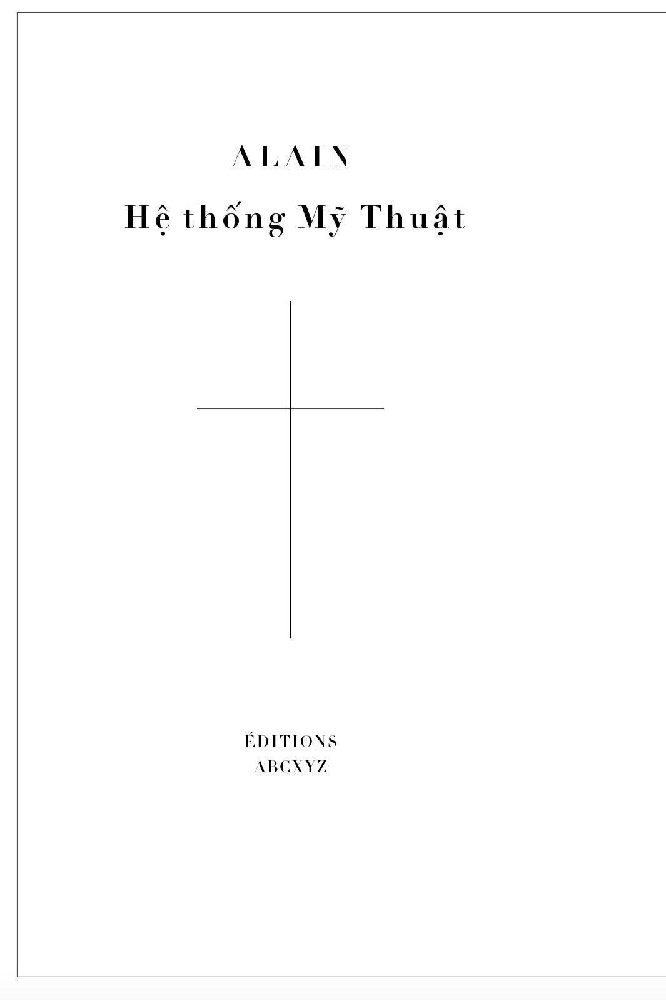

Hiệu sách Hộp
Giới thiệu Liên hệ

Hệ thống Mỹ thuật
Alain in his Système des beaux-arts (1920, revised 1926; “System of the Fine Arts”), a work that is distinguished by its detailed attention to dress, fashion, manners, and the useful arts, and by its idea of the artist as artisan d’abord.
Alain was born in 1868 in Mortagne-au-Perche (Orne). He entered lycée d'Alençon in 1881 and studied there for five years. On 13 June 1956, the lycée was renamed lycée Alain, after its most famous student.
Works by Alain (in English translation)
- Mars, or The Truth about War, London, Toronto, and New York: Jonathan Cape & Harrison Smith, 1930. Translated from the French by Doris Mudie and Elizabeth Hill. Foreword by André Maurois. Foreword by Denis Saurat.
- Alain on Happiness, New York: Frederick Ungar, 1973; Evanston, IL: Northwestern University Press, 1973, 1989. Translated by Robert D. and Jane E. Cottrell. introduction by Robert D. Cottrell.
- The Gods, New York: New Directions, 1974. Translated by Richard Pevear.